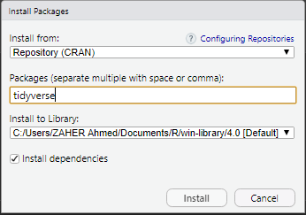
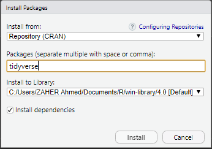

Introduction à R
A. Zaher
R, RStudio et l’extension tidyverse
Pourquoi utiliser R du début à la fin du traitement de données ?
R est un logiciel :
- multiplateforme (Linux, Mac OS X ou Windows);
- libre et gratuit;
- très puissant;
- le développement est très actif;
- excellentes capacités graphiques.

Gratuité / Reproductibilité / Rigueur Scientifique / Transparence / Documentation
RStudio
Environnement de développement intégré (IDE) pour R
- propose des outils et facilite l’écriture de scripts
“il n’y a pas d’obligation à utiliser RStudio, mais il y a une obligation à ne pas utiliser les interfaces de R par défaut.”, Hadrien Commenges

La console

- > : invite de commande (prompt)
Précisions concernant la saisie des commandes
- les espaces autour des opérateurs n’ont pas d’importance
- Exécuter en appuyant sur Ctrl + Entrée.
- R remplace l’invite de commande habituel par un signe + dans le cas d’une commande incomplète
Objets
Objets simples :
## [1] 5
## [1] 10
## [1] 10
Objets
- les noms d’objets peuvent contenir des lettres, des chiffres et les symboles . et _
- R fait la différence entre minuscules et majuscules dans les noms d’objets : resultat et Resultat sont deux objets différents
## [1] 3
## [1] "Ahmed"
Objets
Vecteurs :
- Stocker un ensemble de valeurs dans un seul objet, de type vecteur :
## [1] 25 27 18 31 22
## [1] 35 37 28 41 32
## [1] 625 729 324 961 484
Objets
Vecteurs :
## [1] "CAP" "BAC+3" "BAC" "BAC+5" "BAC"
## [1] "BAC"
Fonctions
- On utilise des fonctions pour effectuer des calculs, obtenir des résultats et accomplir des actions.
- Une fonction a un nom, elle prend en entrée entre parenthèses un ou plusieurs arguments, et retourne un résultat.
## [1] 5
Fonctions
## [1] 18
## [1] 31
## [1] 24.6
## [1] 123
Les Scripts
- Regrouper les commandes dans un seul fichier (un Script)
- Pour créer un script : File -> New File -> R Script (Ctrl+Shift+N)
Installer/Charger des packages
- La plupart des extensions sont développées et maintenues par la communauté des utilisateurs de R, et diffusées via un réseau de serveurs nommé CRAN (Comprehensive R Archive Network).
- Pour installer une extension, on peut utiliser le bouton install de l’onglet Packages de RStudio.
 

Installer/Charger des packages
- On peut aussi installer des packages en utilisant la fonction install.packages() directement dans la console :
- Une fois le package installé, il faut le charger (chaque fois) avant le pouvoir utiliser :
- On regroupe souvent en début de script toute une série d’appels à library.
Le tidyverse
- Ensemble d’extensions pour R, construites autour d’une philosophie commune et conçues pour fonctionner ensemble.
- Faciliter l’utilisation de R dans les domaines les plus courants : manipulation des données, recodages, production de graphiques, etc.


Le tidyverse
- Les extensions qui constituent le coeur du tidyverse :

tidy data
Les principes d’un jeu de données tidy sont les suivants :
* chaque variable est une colonne
* chaque observation est une ligne
* chaque type d’observation est dans une table différente

tibbles
Une évolution moderne du classique data frame du R de base, les tibbles :
- n’ont pas de noms de lignes (rownames)
- autorisent des noms de colonnes invalides pour les data frames (espaces, caractères spéciaux, nombres …)
- s’affichent plus intelligemment que les data frames : seiles les premières sont affichéées, ains que qlq informations supp utiles (dimension, types de colonnes…)
tibbles
## # A tibble: 150 x 5
## Sepal.Length Sepal.Width Petal.Length Petal.Width Species
## <dbl> <dbl> <dbl> <dbl> <fct>
## 1 5.1 3.5 1.4 0.2 setosa
## 2 4.9 3 1.4 0.2 setosa
## 3 4.7 3.2 1.3 0.2 setosa
## 4 4.6 3.1 1.5 0.2 setosa
## 5 5 3.6 1.4 0.2 setosa
## 6 5.4 3.9 1.7 0.4 setosa
## 7 4.6 3.4 1.4 0.3 setosa
## 8 5 3.4 1.5 0.2 setosa
## 9 4.4 2.9 1.4 0.2 setosa
## 10 4.9 3.1 1.5 0.1 setosa
## # ... with 140 more rows